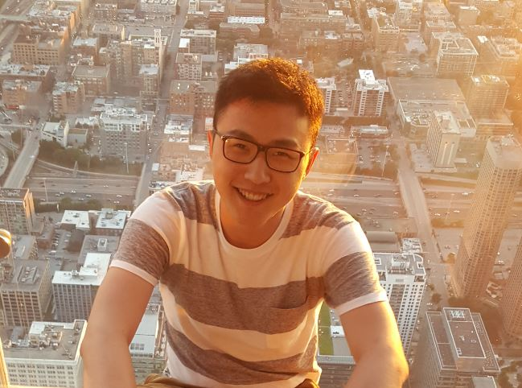

Hello! My name is Trey. People also know me as 杨清云 or Qingyun Yang.
I graduated from Boston University with a B.A. in Astronomy and Physics, then from Australian National University with a M.Sc in Astronomy and Astrophysics. I recently moved to Sendai to join the PhD program at Tohoku University.
During my time in Australia, I became obsessed with spearfishing (freedive underwater and shoot fish with a spear), and to a lesser extent, underwater rugby. However, since these sports aren't exactly accessible in Japan, I'm on the lookout for more ways to stay physically active.
My hometown is a small city in the south-western mountains of China, called Guiyang. I moved back there for 2 years during COVID-19, and had a great time exploring and re-discovering this part of China, particularly the surrounding nature and spicy food - often accompanied by wonderful friends, both old and new.
My mom will have you believe that I play the saxophone pretty well, and right now I'm looking for an EWI to try out digital music production.
I'm a licensed ham radio operator (call sign KC1GFQ) in the United States. I am interested in radio telemetry, APRS, and emergency communications.